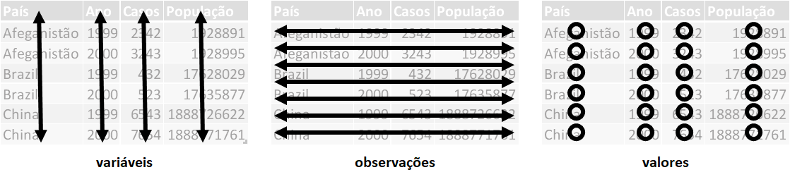

library(tidyverse)
library (gt)4 Transformação de Dados com DPLYR
4.1 Introdução
A seguir temos vários exemplos de transformação de dados utilizando o pacote DYPLR do R. Para saber mais sobre este pacote, acesse:
https://cran.r-project.org/package=dplyr.
Aviso
Para melhor utilizar este material, é importante que você tenha uma introdução à linguagem R e saiba carregar pacotes (packages) no R. Para mais informações acesse:
Para os exemplos à seguir, iremos usar os seguintes pacotes:
- tidyverse
- gt
4.1.1 Exemplos da Folha de Referência
A maioria dos exemplos, visam ajudar na interpretação dos exemplos e funções encontradas na Folha de Referência do dyplr disponível no site do RStudio.
Para a maioria dos exemplos utilizaremos as bases de dados mtcars e starwars provenientes do pacote datasets e dplyr.
Nota
Em geral, ao final de cada comando, você poderá ver uma chamada à função gt(). Isto é apenas para a formatação da tabela de saída e não é necessário para que você entenda os comandos precedentes. Em alguns casos, onde o volume de dados de saída pode ser extenso, usamos também a função head() para mostrar apenas as linhas iniciais. Quando o exemplo possui muitas colunas de saída, eventualmente utilizamos a função select() para selecionar apenas algumas colunas.
MTCARS: Dados de consumo de combustível, performance e design de 32 automóveis ( 1974 Motor Trend US magazine)
mtcars |>
head () STARWARS: Dados dos personagens de STAR WARS
starwars |>
select(1:8) |>
head()
Nota
O termo data-frame descrito ao longo deste texto, é utilizado de forma livre para objetos do tipo data.frame, tibble, entre outros. Pense como se fosse uma tabela de um banco de dados e/ou uma planilha do MS Excel, contendo linhas e colunas. Apesar de não ser rigorosamente igual à uma tabela, muitas vezes usaremos estes termos de forma intercambiável para facilitar o entendimento de iniciantes.
4.1.2 Dados Organizados e Canalização
Dados organizados (tidy) são estruturados onde:
Cada variável está em sua própria coluna e cada observação está em sua própria linha.

Canalização (Piping) é uma forma de sequenciar as funções, facilitando a leitura de várias funções em conjunto. O símbolo |> ou %>% podem ser utilizados para esta finalidade.
Exemplo: x |> f(y), é o mesmo que f(x,y)
4.2 Resumindo Observações
Funções de resumo recebem vetores como entrada e retornam um único valor.
4.2.0.1 summarise
summarise (mtcars, media=mean(mpg)) Cria um novo data-frame. Ele gera uma linha para cada combinação de grupos de variáveis. Se não houver grupos, a saída será uma única linha resumindo todas as observações da entrada.
No exemplo acima, não especificamos nenhum grupo (mais na seção Agrupando Observações), por isso, ele retorna apenas uma linha resumindo todas as observações de mtcars. Como também especificamos a função de mean(), o valor retornado será a média da coluna mpg para todas as observações do data frame em uma única variável (coluna) chamada média.
Outra format de se escrever o comando acima, utilizando a canalização (“pinping”) descrita acima, seria:
mtcars |>
summarise(média = mean(mpg))Ver a seção de Funções de Resumo para mais detalhes.
4.2.0.2 count
Conta valores únicos de uma ou mais variáveis.
mtcars |>
count (cyl) No exemplo acima, contamos os valores únicos da variável cyl e mostramos na variável n. Um equivalente seria utilizar o summarise com o grupo criado na variável cyl: mtcars |> group_by(cyl) |> summarise(n = n()).
Mais sobre a função group_by na seção Agrupando Observações.
4.3 Agrupando Observações
4.3.0.1 group_by
Use group_by (.data, …, .add = FALSE, .drop = TRUE) para criar uma cópia da tabela agrupada por colunas. As funções do dplyr irão manipular cada grupo separadamente e combinar os resultados.
Importante
Se compararmos o resultado de uma tabela antes e depois do agrupamento (group_by), apenas uma informação sobre o grupo será visível.
Isto significa que o agrupamento só afetará o resultado de saída se utilizado em conjunto com funções que entendam esta mudança de contexto, como as funções do dyplr.
Por exemplo, ANTES de agruparmos pela variável cyl (group_by(cyl)) temos:
mtcars |>
as_tibble()DEPOIS do group_by:
mtcars |>
group_by(cyl) Veja que, exceto pela informação :
’# Groups: cyl [3]
Todo o restante da saída é o mesmo. Por isso, é importante que utilizemos o contexto do grupo, junto com outra função.
Exemplo: Se quiser criar uma tabela com a função summarise() com apenas o grupo de cilindradas, podemos usar:
mtcars |>
group_by(cyl) |>
summarise() Supondo que quiséssemos agora, saber o número de carros, agrupados pela variável cyl, podemos utilizar a função summarise, após o agrupamento, criando uma coluna através da função n().
mtcars |>
group_by(cyl) |>
summarise(num_automoveis = n()) Em outro exemplo, podemos extrair o consumo médio (miles/gallon) dos veículos agrupado pelo número de cilindros destes veículos.
mtcars |>
group_by(cyl) |>
summarise(consumo_medio = mean(mpg)) O agrupamento pode ser feito por mais de uma variável também. Por exemplo, se quisermos obter o consumo médio (miles/gallon) dos veículos agrupado pelo número de cilindros destes veículos e também por número de marchas, podemos ter:
Nota
A saída da função summarise, dependendo do caso, irá ser agrupada também automaticamente, se quiser que isto não aconteça, utiliza a opção .groups=“drop”.
mtcars |>
group_by(cyl, gear) |>
summarise(consumo_médio = mean(mpg), .groups = "drop") A função un_group() remove os grupos definidos em uma tabela. É uma boa prática, remover os grupos após efetuar uma sumarização, por exemplo, afim de evitar resultados indesejáveis em sumarizações futuras. Por exemplo:
mtcars |>
group_by(cyl, gear) |>
summarise(numero_marchas = n()) |>
ungroup() No caso acima, se não tivessemos utilizado o desagrupamento (un_group), o resultado ainda teria os grupos demarcados.
4.3.0.2 rowwise
Use rowwise(.data, …) para agrupar dados em linhas individuais. Funções do dyplr irão computar os resultados para cada linha.
No exemplo abaixo, a tabela de dados startwars, possui uma variável (films) que é o tipo lista, ou seja, a coluna contém uma lista de filmes para cada personagem (observação).
Supondo que quiséssemos saber em quantos filmes cada personagem aparece:
starwars |>
select(name, films) |>
rowwise() |>
mutate(quantos_filmes = length(films)) |>
head () Em geral, utilizamos a função rowwise quando não temos uma função vetorizada, isto é, que não retorna um vetor e precisamos aplicá-la em cada linha da tabela.
Nota
Aqui utilizamos também a função head () que retorna apenas as primeiras linhas de uma tablea e não todo seu conteúdo.
Veja a seção de Funções Vetorizadaspara maiores informações.
4.4 Manipulando Observações
4.4.1 Extração de Observações
O dplyr possui uma série de funções que nos ajudam a extrair observações (linhas) de uma tabela, dentre estas, temos:
4.4.1.1 filter
Extrai linhas de uma tablea que satisfazem o critério lógico.
filter(.data, …, .preserve = FALSE)
Exemplo: Para extrair apenas os veículos que possuem consumo (miles/galon) acima de 20, podemos usar:
filter(mtcars, mpg > 20) Podemos utilizar operadores lógicos para ajustar os critérios do filtro, como por exemplo, os operadores abaixo:
==, >, >=, &, |, !, xor(), is.na(), between(), near(), entre outros
Por exemplo, para filtrar os veículos com consumo acima de 20 E com apenas 3 marchas, temos:
mtcars |>
filter(mpg > 20 & gear == 3) 4.4.1.2 distinct
Remove linhas com valores duplicados, retornando apenas os valores únicos da variável (coluna).
distinct(.data, …, .keep_all = FALSE) .
Por exemplo, se precisarmos saber quais os valores da variável gear (marcha), podemos utilizar:
mtcars |>
distinct(gear)
Nota
Se utilizar o código acima, verá que o R possui um “nome” para as linhas. É importante ressaltar que este nome NÃO é uma variável da tabela, ou seja, não temos uma coluna com o “nome” do veículo, é por isso que você vê nomes de veículos, mesmo pedindo os valores únicos das marchas. Para maiores informações sobre isso, veja a seção Nome de Linhas.
4.4.1.3 slice
Seleciona linhas pelas suas respectivas posições nda tabela.
slice(.data, …, .preserve = FALSE)
Por exemplo, para selecionarmos apenas da linha 10 até a linha 15 da tabela usamos:
mtcars |>
slice(10:15) Veja que em alguns casos, podemos utilizar um equivalente filtro para obter o mesmo resultado:
mtcars |>
filter(between(row_number(), 10, 15)) 4.4.1.4 slice_sample
Para randomicamente selecionar linhas da tabela. Use n para selecionar o número de linhas ou prop para selecionar um percentual das linhas.
slice_sample(.data, …, n, prop, weight_by = NULL, replace = FALSE) .
Para selecionar 5 linhas randomicas da tabela usamos:
mtcars |>
slice_sample(n = 5, replace = TRUE) Para selecionar 25% do total de linhas da tabela de forma dandomica usamos:
mtcars |>
slice_sample(prop = 0.25, replace = TRUE) 4.4.1.5 slice_min
Seleciona linhas com valores minímo (slice_min) ou máximo (slice_max) de uma variável.
slice_min(.data, order_by, …, n, prop, with_ties = TRUE) and slice_max() .
Por exemplo, com base no menor valor da variável de consumo do veículo (mpg), retorne 25% da tabela.
mtcars |>
slice_min(mpg, prop = 0.25) Outro exemplo, poderia ser que você precise retornar os 5 veículos de maior consumo:
mtcars |>
slice_max(mpg, n = 5) 4.4.1.6 slice_head
Seleciona as primeiras (slice_head) or últimas (slide_tail) linhas de uma tabela.
slice_head(.data, …, n, prop) and slice_tail() .
Por exemplo, vamos selecionar as 5 primeiras linhas de mtcars:
Nota
Apenas para exemplificar, no código abaixo, deixamos a função gt “mostrar” os nomes das linhas em sua saída. Para maiores informações sobre isso, veja a seção Nome de Linhas.
mtcars |>
slice_head(n = 5) |>
gt(rownames_to_stub = TRUE)| mpg | cyl | disp | hp | drat | wt | qsec | vs | am | gear | carb | |
|---|---|---|---|---|---|---|---|---|---|---|---|
| Mazda RX4 | 21.0 | 6 | 160 | 110 | 3.90 | 2.620 | 16.46 | 0 | 1 | 4 | 4 |
| Mazda RX4 Wag | 21.0 | 6 | 160 | 110 | 3.90 | 2.875 | 17.02 | 0 | 1 | 4 | 4 |
| Datsun 710 | 22.8 | 4 | 108 | 93 | 3.85 | 2.320 | 18.61 | 1 | 1 | 4 | 1 |
| Hornet 4 Drive | 21.4 | 6 | 258 | 110 | 3.08 | 3.215 | 19.44 | 1 | 0 | 3 | 1 |
| Hornet Sportabout | 18.7 | 8 | 360 | 175 | 3.15 | 3.440 | 17.02 | 0 | 0 | 3 | 2 |
4.4.2 Arranjar Observações
4.4.2.1 arrange
A função arrange ordena linhas por valores de uma coluna(s) (menor para maior), use com a função desc() para ordenar de maior para menor.
arrange(.data, …, .by_group = FALSE) arrange(mtcars, mpg) ou arrange(mtcars, desc(mpg))
No exemplo abaixo, vamos ordenar a variável mpg, de forma a mostrar primeiro os veículos com menor consumo de combustível até o de maior consumo:
mtcars |>
arrange(mpg) |>
gt(rownames_to_stub = TRUE)| mpg | cyl | disp | hp | drat | wt | qsec | vs | am | gear | carb | |
|---|---|---|---|---|---|---|---|---|---|---|---|
| Cadillac Fleetwood | 10.4 | 8 | 472.0 | 205 | 2.93 | 5.250 | 17.98 | 0 | 0 | 3 | 4 |
| Lincoln Continental | 10.4 | 8 | 460.0 | 215 | 3.00 | 5.424 | 17.82 | 0 | 0 | 3 | 4 |
| Camaro Z28 | 13.3 | 8 | 350.0 | 245 | 3.73 | 3.840 | 15.41 | 0 | 0 | 3 | 4 |
| Duster 360 | 14.3 | 8 | 360.0 | 245 | 3.21 | 3.570 | 15.84 | 0 | 0 | 3 | 4 |
| Chrysler Imperial | 14.7 | 8 | 440.0 | 230 | 3.23 | 5.345 | 17.42 | 0 | 0 | 3 | 4 |
| Maserati Bora | 15.0 | 8 | 301.0 | 335 | 3.54 | 3.570 | 14.60 | 0 | 1 | 5 | 8 |
| Merc 450SLC | 15.2 | 8 | 275.8 | 180 | 3.07 | 3.780 | 18.00 | 0 | 0 | 3 | 3 |
| AMC Javelin | 15.2 | 8 | 304.0 | 150 | 3.15 | 3.435 | 17.30 | 0 | 0 | 3 | 2 |
| Dodge Challenger | 15.5 | 8 | 318.0 | 150 | 2.76 | 3.520 | 16.87 | 0 | 0 | 3 | 2 |
| Ford Pantera L | 15.8 | 8 | 351.0 | 264 | 4.22 | 3.170 | 14.50 | 0 | 1 | 5 | 4 |
| Merc 450SE | 16.4 | 8 | 275.8 | 180 | 3.07 | 4.070 | 17.40 | 0 | 0 | 3 | 3 |
| Merc 450SL | 17.3 | 8 | 275.8 | 180 | 3.07 | 3.730 | 17.60 | 0 | 0 | 3 | 3 |
| Merc 280C | 17.8 | 6 | 167.6 | 123 | 3.92 | 3.440 | 18.90 | 1 | 0 | 4 | 4 |
| Valiant | 18.1 | 6 | 225.0 | 105 | 2.76 | 3.460 | 20.22 | 1 | 0 | 3 | 1 |
| Hornet Sportabout | 18.7 | 8 | 360.0 | 175 | 3.15 | 3.440 | 17.02 | 0 | 0 | 3 | 2 |
| Merc 280 | 19.2 | 6 | 167.6 | 123 | 3.92 | 3.440 | 18.30 | 1 | 0 | 4 | 4 |
| Pontiac Firebird | 19.2 | 8 | 400.0 | 175 | 3.08 | 3.845 | 17.05 | 0 | 0 | 3 | 2 |
| Ferrari Dino | 19.7 | 6 | 145.0 | 175 | 3.62 | 2.770 | 15.50 | 0 | 1 | 5 | 6 |
| Mazda RX4 | 21.0 | 6 | 160.0 | 110 | 3.90 | 2.620 | 16.46 | 0 | 1 | 4 | 4 |
| Mazda RX4 Wag | 21.0 | 6 | 160.0 | 110 | 3.90 | 2.875 | 17.02 | 0 | 1 | 4 | 4 |
| Hornet 4 Drive | 21.4 | 6 | 258.0 | 110 | 3.08 | 3.215 | 19.44 | 1 | 0 | 3 | 1 |
| Volvo 142E | 21.4 | 4 | 121.0 | 109 | 4.11 | 2.780 | 18.60 | 1 | 1 | 4 | 2 |
| Toyota Corona | 21.5 | 4 | 120.1 | 97 | 3.70 | 2.465 | 20.01 | 1 | 0 | 3 | 1 |
| Datsun 710 | 22.8 | 4 | 108.0 | 93 | 3.85 | 2.320 | 18.61 | 1 | 1 | 4 | 1 |
| Merc 230 | 22.8 | 4 | 140.8 | 95 | 3.92 | 3.150 | 22.90 | 1 | 0 | 4 | 2 |
| Merc 240D | 24.4 | 4 | 146.7 | 62 | 3.69 | 3.190 | 20.00 | 1 | 0 | 4 | 2 |
| Porsche 914-2 | 26.0 | 4 | 120.3 | 91 | 4.43 | 2.140 | 16.70 | 0 | 1 | 5 | 2 |
| Fiat X1-9 | 27.3 | 4 | 79.0 | 66 | 4.08 | 1.935 | 18.90 | 1 | 1 | 4 | 1 |
| Honda Civic | 30.4 | 4 | 75.7 | 52 | 4.93 | 1.615 | 18.52 | 1 | 1 | 4 | 2 |
| Lotus Europa | 30.4 | 4 | 95.1 | 113 | 3.77 | 1.513 | 16.90 | 1 | 1 | 5 | 2 |
| Fiat 128 | 32.4 | 4 | 78.7 | 66 | 4.08 | 2.200 | 19.47 | 1 | 1 | 4 | 1 |
| Toyota Corolla | 33.9 | 4 | 71.1 | 65 | 4.22 | 1.835 | 19.90 | 1 | 1 | 4 | 1 |
4.4.3 Adicionar Observações
Algumas vezes precisamos adicionar observações (linhas) em uma tabela já existente, neste caso podemos utilizar a função add_row().
4.4.3.1 add_row
add_row(cars, speed = 1, dist = 1).
Neste caso, iremos adicionar uma nova linha na tables cars (não mtcars), que possui apenas duas variáveis (speed e dist).
cars |>
add_row(speed = 1, dist = 1) |>
tail() 4.5 Manipulando Variáveis
4.5.1 Extração de Variáveis
O dplyr possui uma série de funções que nos ajudam a obter um conjunto de variáveis (colunas) como um novo vetor ou nova tabela:
4.5.1.1 pull
Extrai valores da coluna como um vetor, por nome ou índice.
pull(.data, var = -1, name = NULL, …)
mtcars |>
pull (wt) [1] 2.620 2.875 2.320 3.215 3.440 3.460 3.570 3.190 3.150 3.440 3.440 4.070
[13] 3.730 3.780 5.250 5.424 5.345 2.200 1.615 1.835 2.465 3.520 3.435 3.840
[25] 3.845 1.935 2.140 1.513 3.170 2.770 3.570 2.780No exemplo acima, a coluna peso (wt), é extraída da tabela e um obeto do tipo vetor é retornado na saída.
Podemos extrair um vator de uma colunas também utilizando o número da coluna. Se utilizarmos valores negativos, podemos extrair um vetor das colunas contando a partir do lado direto.
Por exemplo, se quisermos extratir um vetor da penúltima coluna de uma tabela, podemos usar:
mtcars |>
pull (-2) [1] 4 4 4 3 3 3 3 4 4 4 4 3 3 3 3 3 3 4 4 4 3 3 3 3 3 4 5 5 5 5 5 44.5.1.2 select
Extrai valores de uma ou mais variáveis (colunas) e retorna uma nova tabela, por nome ou índice.
select(.data, …)
Por exemplo, podemos obter uma nova tabela contendo apenas as variáveis mpg e wt usando:
mtcars |>
select (mpg, wt) A função select possui um série de opções que tornam a seleção das counas mais fáceis. A seguir temos algumas delas. Consulte a ajuda do select usando “?select” para obter a lista completa.
: para selecionar um range consecutivo de colunas
! para pegar o complemento de uma conjunto de colunas
& e | para selecionar a intersecção ou união (E OU) de um conjunto de colunas
c() para combinar seleções
Além disso, possui também algumas funções que ajudam na seleção como:
- eveything(), last_col(), starts_with(), ends_with(), contains(), matches(), num_range()
Por exemplo, se quisermos selecionar toda a base mtcars, exceto as colunas wt e mpg, podemos usar:
mtcars |>
select(!c(mpg, wt)) Se quisermos selecionar apenas as 4 primeiras colunas e também a coluna wt, podemos usar:
mtcars |>
select ((1:4) | wt) 4.5.1.3 relocate
Move colunas para uma nova posição e retonar uma tabela com esta nova order de colunas.
relocate(.data, …, .before = NULL, .after = NULL)
mtcars |>
relocate (mpg, cyl, .after = last_col()) No exemplo acima, escolhermos mover as colunas mpg e cyl para depois (à direita) da última coluna (last_col()).
4.5.2 Manipular Várias Variáveis de Uma Vez
Em algumas situações, desejamos manipular várias variáveis (colunas) de uma só vez ou invés de cada coluna de cada vez. Para estes casos ,podemos usar as funções across e c_across.
4.5.2.1 across
Resume ou alterar múltiplas colunas da mesma maneira. across(.cols, .funs, …, .names = NULL)
mtcars |>
summarise(across(everything(), mean)) No exemplo acima, varremos todas (everything) as colunas da tabela e resumimos aplicando a função de média (mean) nestas colunas.
No exemplo a seguir, iremos “varrer” as colunas 5 até 7 e arredondar seus valores com apenas um digito usando a função round().
mtcars |>
mutate(across(5:7, ~ round(.x, digits = 1) )) 4.5.2.2 c_across
Computa através das colunas os dados linha a linha. Em geral, esta função é utilizado em conjunto com a função rowwise().
c_across(.cols)
mtcars |>
rowwise() |>
transmute (total = sum(c_across(4:6)))No exemplo acima, “varremos” linha a linha da tabela e depois fazemos a soma da coluna 4 até a coluna 6.
4.5.3 Criando novas variáveis
O dyplr possui a habilidade de criar novas variáveis (colunas) ou alterar variáveis já existentes. Estes comandos, aplicam funções que são de um tipo especial chamadas “funções vetorizadas. Elas recebem vetores como entradas e retornam vetores do mesmo tamanho como. Para maiores detalhes veja a seção Funções Vetorizadas.
4.5.3.1 mutate
Altera ou cria uma nova variável.
mutate(.data, …, .keep = “all”, .before = NULL, .after = NULL).
Por exemplo, se quisermos utilizar a variável mpg (milhas por galão) e criar uma nova variável chamada gpm (galões por milha), usamos:
mtcars |>
mutate (gpm = 1 / mpg)
Cuidado
É importante observar que a função mutate() considera o agrupamento da tabela, caso houver. Em casos de funções de agregação e ranqueamento (ex. média, ranque, etc), os valores de mutate serão considerados a partir do agrupamento.
Por exemplo, para criar uma coluna que mostra a diferença entre o consumo do veículo e o consumo médio de todos os veículos, podemos usar:
mtcars |>
mutate (diferenca = mpg - mean(mpg)) Mas se quisermos saber a diferença de consumo com a média dos veículos que possuem o mesmo número de cilindros, podemos fazer:
mtcars |>
group_by(cyl) |>
mutate (diferenca = mpg - mean(mpg)) *Veja também add_column(), add_count(), e add_tally().
4.5.3.2 transmutate
A função transmutate funciona de forma similar a função mutate, porém ela cria/altera uma ou mais colunas e ignora todas as demais em suas saída.
4.5.3.3 rename
Renomeia variáveis (colunas).
Há também a função rename_with() para chamar uma função para renomear a coluna.
A função rename(.data, …)
cars |>
rename (distancia = dist) |>
head () 4.6 Funções Vetorizadas
As funções mutate() e transmute() aplicam funções vetorizadas em colunas para criar novas colunas.
Nota
Funções vetorizadas, são chamadas também de funções de janela (window functions) e recebem vetores como argumento de entrada e retornar vetores de mesmo tamanho como saída.
A seguir temos algumas funções vetorizadas que auxiliam na manipulação de dados e, em geral, são utilizadas com mutate() ou filter().
4.6.1 Deslocamento
O dplyr possui funções para ajuste de deslocamento (offset). Estas funções são muito úteis para “encontrar” valores antes ou depois em relação aos valores atuais.
4.6.1.1 lag
Desloca elementos em n posições positivas. Usado para “encontrar o valor anterior em n posições”.
Supondo que precisarmos criar uma coluna contendo o consumo do veiculo que aparece na linha anterior da tabela, podemos fazer:
mtcars |>
mutate (mpg_anterior = lag(mpg)) Caso os dados não estejam ordenados,
4.6.1.2 lead
Desloca elementos em n posições negativas. Usado para “encontrar o valor posterior em n posições”.
Supondo que precisarmos criar uma coluna contendo o consumo do veiculo que aparece duas linhas posteriores da tabela, podemos fazer:
mtcars |>
mutate (duas_linhas_posteriores = lead(mpg, n = 2))4.6.2 Agregação Acumulada
O dplyr possui funções de agregações acumuladas. São versões vetorizadas de all, any e mean, enquanto outras são de soma e produtos acumulados e extremos (min/max).
Dica
As funções cumall() e cumany() são muito úteis quando usadas com filter(), pois avaliam uma expressão retornando um vetor lógico a partir do valor avaliado pela expressão:
4.6.2.1 cumall
Retorna todas as observações (linhas) até que o primeiro caso da expressão a ser avaliada seja falso.
No exemplo a seguir, iremos retornar todos os veículos até que encontre um veículo onde sua potência (hp) seja maior ou igual à 110. Quando encontrar esta linha, todas as demais à partir dela na tabela serão ignoradas, mesmo que atendam a expressão. Ou seja, mesmo que houver um veículo com potencia 110 na última linha, nexte exemplo ela será ignorada.
mtcars |>
filter(cumall(hp <= 110)) Se quisermos ’varrer” a tabela até encontrarmos um veículo que tenha a potência (hp) menor que 90 e ignorar todas as linhas depois dela, podemos usar:
mtcars |>
filter(cumall(!hp <= 90)) 4.6.2.2 cumany
Retorna todas as observações (linhas) após o primeiro caso da expressão a ser avaliada seja verdadeiro.
Por exemplo: Se quisermos “varrer” a tabela em busca do veículo com potência menor que 70 e obter esta e todas as demais linhas após, usamos:
mtcars |>
filter (cumany(hp <70))4.6.2.3 cummean
A função cummean() é similar a função cumall ou cumany, porém retorna um vetor numérico contento as médias do vetor de entrada.
Por exemplo, se quisermos criar uma coluna com o valor da média de potência conforme “varremos” a tabela, ou seja, conforme a potência de cada veículo é listada, usamos:
mtcars |>
mutate (media_acumulada = cummean(hp)) 4.6.2.4 cummax
Use para saber o valor máximo acumulado até aquela linha.
Por exemplo, se agruparmos os veículos de mtcars de acordo com a coluna de número de cilindros (cyl), podemos saber qual o maior valor acumulado da coluna potência (hp) por grupo de veículos conforme “varremos” a tabela:
mtcars |>
group_by(cyl) |>
mutate (cummax = cummax(hp)) 4.6.2.5 cummin
Use para saber o valor mínimo acumulado até aquela linha.
Por exemplo, se agruparmos os veículos de mtcars de acordo com a coluna de número de cilindros (cyl), podemos saber qual o menor valor acumulado da coluna potência (hp) por grupo de veículos conforme “varremos” a tabela:
mtcars |>
group_by(cyl) |>
mutate (cummin = cummin (hp)) 4.6.2.6 cumprod
Similar a cummin() ou cummax(). Use para saber o valor multiplicado acumulado até aquela linha.
Por exemplo, para acumularmos a multiplicação dos pesos (wt) de cada veículo até a linha, usamos:
mtcars |>
mutate (cumprod = cumprod (wt)) 4.6.2.7 cumsum
Similar a cummin() ou cummax(). Use para saber o valor da soma acumulada até aquela linha.
Por exemplo, para acumularmos a soma dos pesos (wt) de cada veículo até a linha, usamos:
mtcars |>
mutate (cumsum = cumsum(wt))4.6.3 Ranqueamento
4.6.3.1 row_number
Use para adicionar o número da linha. Como as demais funções do dplyr, ela respeita os grupos da tabela quando houver.
Por exemplo, para enumerar as linhas dos veículos agrupados por número de cilindros, podemos usar:
mtcars |>
group_by(cyl) |>
mutate (num_linha = row_number())4.6.3.2 rank
Use para criar um ranqueamento de uma variável.
Por exemplo, para fazer um ranqueamento dos veículos mais leves entre grupos de mesma cilindragem, podemos usar:
mtcars |>
group_by (cyl) |>
mutate (rank = rank(wt)) Observe que para veículos de 8 cilindros, a segunda e última linha possuem o mesmo peso e portanto tiveram o mesmo ranqueamento (5.5).
4.6.3.3 dense_rank
Use para ajustar o ranqueamento sem pular lacunas em casos de empate.
Vejo abaixo como ele se compara ao ranqueamento da função rank().
mtcars |>
group_by (cyl) |>
mutate (rank = rank(wt), dense_rank = dense_rank(wt)) Observe que na segunda e última linha de 8 cilindros, empatam em 5.5 na função rank() e a posição 6 é pulada, sendo o próximo do ranqueamento o número 7. Já na função dense_rank(), o empate fica na posição 5 e o próximo na posição 6.
4.6.3.4 percent_rank
Use para retornar um número entre 0 e 1 (percentual) do ranqueamento mínimo.
Veja abaixo como ela se compara com as funções rank e dense_rank:
mtcars |>
group_by (cyl) |>
mutate (rank = rank(wt), dense_rank = dense_rank(wt), percent_rank = percent_rank(wt)) 4.6.3.5 cume_dist
Use para saber a distribuição acumulada de acordo com o ranqueamento atribuído.
Por exemplo, se agruparmos por número de cilindros (cyl), criarmos uma coluna de ranqueamento (rank) e outra coluna com a distribuição, podemos saber como o ranqueamento acumulado está distribuído.
mtcars |>
group_by(cyl) |>
mutate (rank = rank(wt), cume_dist = cume_dist(wt)) |>
arrange (cume_dist)4.6.3.6 ntile
Use para retornar um quantil (percentil, quartil, etc) de um vetor.
Por exemplo, para segregarmos os veículos em quartis (quatro partes) (0-0.25-.50-.75-1), podemos usar:
mtcars |>
mutate (quartil = ntile(wt, 4))4.6.4 Matemática
4.6.4.1 operações e logs:
São símbolos para funções matemáticas mais comuns como:
+, - , *, /, ^, %/%, %% - Usados para as oper. aritiméticas
log(), log2(), log10() - Usados para logaritmos
4.6.4.2 between
Use para retornar os valores do vetor entre dois valores. É o equivalente a escrever: x >= valor_esquerda & x <= valor_direita.
Por exemplo, se quisermos obter os veículos com o peso entre 3 a 4 mil libras, podemos usar a função between() juntamente com a função filter().
mtcars |>
filter (between(wt, 3, 4)) 4.6.4.3 near
Use para verificar se dois vetores de ponto fultuante são iguais:
O exemplo abaixo, duplica a coluna de peso (wt –> wt2) dos veículos e altera o primeiro valor de 2.620 para 2.600, salvando em um novo data frame (mtcars_novo) que será usado em seguida;
mtcars_novo <- mtcars |>
mutate(wt2 = wt) |>
mutate (wt2 = ifelse(row_number() == 1, 2.600, wt2))Se usarmos o igual ( == ) para validar ambas colunas, devido às diferenças nas casa decimais, teríamos FALSO:
mtcars_novo$wt == mtcars_novo$wt2 [1] FALSE TRUE TRUE TRUE TRUE TRUE TRUE TRUE TRUE TRUE TRUE TRUE
[13] TRUE TRUE TRUE TRUE TRUE TRUE TRUE TRUE TRUE TRUE TRUE TRUE
[25] TRUE TRUE TRUE TRUE TRUE TRUE TRUE TRUESe usarmos a função near, por esta ter um parâmetro de tolerância que iremos definiar como acima de 0.020 (0.021 por exemplo), teríamos VERDADEIRO para todos os items do vetor:
near (mtcars_novo$wt, mtcars_novo$wt2, tol = 0.021) [1] TRUE TRUE TRUE TRUE TRUE TRUE TRUE TRUE TRUE TRUE TRUE TRUE TRUE TRUE TRUE
[16] TRUE TRUE TRUE TRUE TRUE TRUE TRUE TRUE TRUE TRUE TRUE TRUE TRUE TRUE TRUE
[31] TRUE TRUE4.6.5 Miscelânea
4.6.5.1 if_else
Use para fazer um “SE” (IF) vetorizado, ou seja, elemento por elemento.
Por exemplo, se quisermos saber quais veículos percorrem 1/4 de milha em menos de 20 segundos, podemos usar a coluna qsec com a função if_else para criar uma nova coluna marcando como “MAIX VELOZ” os veículos que percorrem com menos de 20 segundos e “MENOS VELOZ” os que não atendem a este critério:
mtcars |>
mutate (categoria_arranque =
ifelse(qsec < 20, "MAIS VELOZ", "MENOS VELOZ")) 4.6.5.2 case_when
Use quando quiser fazer um if_else com mais de dois casos, ou seja, ao invés de aninhá-los(nested if).
Usando o mesmo exemplo da função if_else , porém gostaríamos de criar um terceira classificação chamada de “SUPER VELOZ” para os veículos com tempo abaixo de 16 segundos, teríamos:
mtcars |>
mutate (categoria_arranque = case_when(
qsec < 17 ~ "SUPER VELOZ",
qsec < 20 ~ "MAIS VELOZ",
TRUE ~ "MENOS VELOZ")) A função case_when, também permite que você utilize diferentes colunas, e operações lógicas também.
Por exemplo, se quisermos colocar a categoria “INVÁLIDO” para os veículos com 8 cilindros (cyl) OU consumo acima de 30 galões/milha (mpg), usamos:
mtcars |>
mutate (categoria_arranque =
case_when(
cyl == 8 | mpg > 30 ~ "INVALIDO",
qsec < 17 ~ "SUPER VELOZ",
qsec < 20 ~ "MAIS VELOZ",
TRUE ~ "MENOS VELOZ")) 4.6.5.3 coalesce
Use para sobrescrever os valores de NA em um vetor.
O exemplo abaixo, sobrescreve com zeros os valores faltantes (missing) do vetor x:
x <- sample(c(1:5, NA, NA, NA))
coalesce(x, 0L)[1] 0 2 1 3 4 0 0 5
Dica
Use na_if() para sobrescrever um valor específico com NA e tidyr::replace_na() para sobrescrever os NAs com um valor.
4.6.5.4 na_if
Use para sobrescrever um valor específico com NA.
Por exemplo, se quisermos colocar NAs na coluna de consumo (mpg) para os veículos com 8 cilindros (cyl), podemos usar a na_if() juntamente com a mutate():
mtcars |>
mutate(mpg = na_if(cyl, 8)) 4.6.5.5 pmax - max
Use max() para retornar o máximo valor de um vetor ou pmax() para retornar o valor máximo entre elementos de vetores em paralelo.
Por exemplo, se tiver um vetor dois vetores (x e y) com 5 elementos cada, a função max() irá retornar o maior vetor contido no vetor escolhido:
x <- c(1, 2, 3, 4, 5)
y <- c(1, 2, 10, 1, 20)
max(x)[1] 5max(y)[1] 20Já se usarmos o pmax(), ele irá comparar cada elemento de x com seu respectivo elemento de y e retornar o máximo valor.
x <- c(1, 2, 3, 4, 5)
y <- c(1, 1, 10, 1, 20)
pmax(x, y)[1] 1 2 10 4 204.6.5.6 pmin - min
É idêntico às funções pmax - max (), porém ao invés de retornar o valor máximo ou o máximo do elemento em paralelo, estas funções retornam seus respectivos valores mínimos.
4.7 Funções de Resumo
summarise() aplica funções de resumo em colunas para criar uma nova tabela. Funções de resumo recebem vetores como entrada e retornam um valor único na saída.
Cuidado
Estas funções retornam informações sobre o grupo ou variável corrente, portanto só funcionam dentro de um contexto específico como summarise() ou mutate().
4.7.1 Contagem
4.7.1.1 n
Use para retornar o tamanhio do grupo corrente.
Por exemplo, para contar quantos veículos temos em cada grupo de cilindors, podemos usar a summarise() com o n() depois de agrupar pela coluna de cilindors (cyl).
mtcars |>
group_by(cyl) |>
summarise(numero_veículos = n()) 4.7.1.2
4.7.1.3 n_distinct
Use para contar os valores unicos em um vetor.
Por exemplo, para saber QUANTAS categorias de cilindros temos na tabela mtcars, podemos usar:
mtcars |>
summarise (cat_cilindros = n_distinct(cyl)) Se quisessemos saber QUAIS categoris de cilindros temos, podemos fazer usando a distinct:
mtcars |> unique (cyl) ### Posição
mtcars |>
distinct(cyl) 4.7.1.4 sum
Use para retornar a soma de todos os valores presentes em seu argumento.
Por exemplo, para sabermos a soma dos pesos (wt) dos veículos agrupados pelo número de cilindros (cyl), podemos usar a função sum, juntamente com o summarise() e group_by().
mtcars |>
group_by(cyl) |>
summarise(soma_pesos = sum(wt)) Veja que se houver NA na variável (coluna), a função sum irá retornar NA. Para ignorar os NAs e fazer a soma, use o argumento na.rm = TRUE.
4.7.2 Posição
4.7.2.1 mean
Use para obter a média dos elementos do vetor. Por exemplo, se quisermos saber a média de peso de todos os veículos, podemos usar:
mtcars |>
summarise (media_peso =mean(wt)) 4.7.2.2 median
Use para obter a mediana dos elementos de um vetor. è similar à função mean, porém retorna a mediana ou invés da média.
4.7.3 Ordem
4.7.3.1 first
Use para obter o primeiro elemento de um vetor.
Por exemplo, se quisermos obter o peso do primeiro veículo de cada grupo de cilindros, podemos usar:
mtcars |>
group_by(cyl) |>
summarise(primeiro_veiculo_do_grupo = first(wt))
Dica
Usando o parametro order_by = , podemos passar um vetor para determinar uma ordem.
Por exemplo, se criarmos um agrupamento pelo numero de cilindros e criarmos um ranqueamento pelo consumo do veículo, podemos obter o peso do veículo de menor consumo usando:
mtcars |>
group_by(cyl) |>
mutate (rank_peso = rank(mpg)) |>
summarise(primeiro_veiculo_ordenado_pelo_cosumo =
first(wt, order_by = rank_peso)) 4.7.3.2 last
Use para obter o último elemento. É similar a função first, porém ao invés de retornar o primeiro elemento, irá retornar o último.
4.7.3.3 nth
Use para obter o n-ésimo elemento. É similar a função first, porém ao invés de retornar o primeiro elemento, irá retornar o n-ésimo elemento.
Por exemplo, se quisermos obter o peso do segundo veículo de cada grupo de cilindros, podemos usar:
mtcars |>
group_by(cyl) |>
summarise(segundo_veiculo_do_grupo = nth(wt,2)) Use valor negativo para contar a partir do último elemento.
Por exemplo, se quisermos obter o peso do penúltimo veículo de cada grupo de cilindros, podemos usar:
mtcars |>
group_by(cyl) |>
summarise(penultimo_veiculo_do_grupo = nth(wt,-2)) 4.7.4 Ranqueamento
4.7.4.1 quantile
Use para obter os quantils de um vetor. Por padrão retorna os quartis (0, 0.25, .5, .75 e 1) de um vetor.
Por exemplo, se quisermos saber os quartis dos pesos dos grupos de cilindors dos veículos, podemos usar:
mtcars |>
group_by(cyl) |>
summarise(q = quantile(mpg)) |>
ungroup() Usando o parâmeto probs = , podemos definir quanquer quantil.
Por exemplo, se quisermos obter apenas o segundo (média) quartil e o último (valor máximo) do cosumo de grupo de cilindors dos veículos, podemos usar:
mtcars |>
group_by(cyl) |>
summarise(q = quantile(mpg, probs = c(.5, 1))) |>
ungroup()4.7.4.2 min
Use para obter o valor mínimo. Similar a quantile.
4.7.4.3 max
Use para obter o valor máximo. Similar a quantile.
4.7.5 Dispersão
O dyplr possuem algumas funções para avaliar o espalhamento dos dados (dispersão) em torno da média central. Estas funções vem do campo da estatística.
4.7.5.1 var
Use para calcular a variância dos dados.
Por exemplo, par calcular a variância total dos pesos (wt) dos veículos de tabela mtcars agrupada pelo número de cilindros (cyl), podemos usa-la junto com a função summarise:
mtcars |>
group_by(cyl) |>
summarise(varianca = var(wt))No exemplo acima, observamos que os veículos com 6cilindros possuem seus pesos mais próximos da média que os veículos com 4 ou 8 cilindros.
4.7.5.2 sd
Use para calcular o desvio padrão. É similar a função var, porém retorna o desvio padrão ao invés da variância.
Usando o mesmo exemplo da função var, o código ficaria:
mtcars |>
group_by(cyl) |>
summarise(desvio_padrao = sd(wt)) 4.7.5.3 IQR
Use para calcular a distância inter-quartil. É similar a função var, porém retorna o range entre os quartis ao invés da variância.
Usando o mesmo exemplo da função var, o código ficaria:
mtcars |>
group_by(cyl) |>
summarise(distancia_interquartil = IQR(wt)) 4.7.5.4 mad
Use para calcular a desvio absoluto da mediana. É similar a função var, porém o desvio absoluto da mediana ao invés da variância.
Usando o mesmo exemplo da função var, o código ficaria:
mtcars |>
group_by(cyl) |>
summarise(Desv_absolto_mediana = mad(wt)) 4.8 Combinando Tabelas
4.8.1 Juntando Variáveis
Quando você tem uma ou mais variáveis de um dataframe com o mesmo número de observações de outra(s) variável(eis), você pode uní-las diretamente atraveś da função bind_cols(), porém se o número de observações forem diferentes, é necessário utilizar funções de união transformadoras (mutating joins). Ver a seção Relacionando Dados para maiores detalhes sobre as uniões transformadoras.
4.8.1.1 bind_cols
Use para unir variáveis de mesmo número de observações.
Por exemplo, no pacotes datasets, temos um dataframe (tabela), chamado state.names, que possui o nomes de todos os estados dos EUA. Há também o state.abb, que possui uma lista das abreviações dos estados americanos. Se quiser unir ambas variáveis, podemos usar:
bind_cols(state.abb, state.name) 4.8.2 Relacionando Dados
Quando temos dois dataframes (tabelas) e queremos adicionar colunas de um à outro, usamos funções chamadas de uniões transformadoras (“mutating joins”). Estas funções transformam um tabela, adicionando coluna(s) de outra tabela de acordo com as linhas baseado em chaves (“keys”) definidas ao usar a função.
Preprarando as tabelas de Exemplo:
Para os exemplos a seguir, utilizaremos o dataframe state.x77, que possui 8 variáveis dos estados americanos com expectativa de vida, renda per capita, população, etc. Chamaremos esta tabela de X.
Chamaremos de Y, uma tabela states.abb e state.name, que possui as abreviações e nomes dos estados americanos respectivamente. Iremos unir estas variáveis com a função bind_cols, já que elas possuem o mesmo número de observações.
Porém para exemplificar casos onde a tabela Y, não possui extamente o mesmo número de observações da tabela X, iremos excluir as abreviações que começam com as letras C, M, I e V. Com isto, nossa table Y final, irá contar apenas 37 observações, enquanto a tabela X irá conter todos os 50 estados americados.
Observe que ambas as tabelas (X e Y) contém ao menos uma coluna em comum (coluna “Estado”). Esta coluna será utilizada como chave (key) para fazermos as uniões.
Para criar as tabelas X e Y, usaremos:
X <- state.x77 |>
as_tibble() |>
bind_cols(state.name) |>
rename("Estado" = "...9")
XY <- bind_cols(state.abb, state.name) |>
as_tibble() |>
rename("Abreviacao" = "...1", "Estado" = "...2") |>
filter(!str_detect(Abreviacao, "^[CMIV]"))
Y4.8.2.1 left_join
Use para unir valores iguais de X em Y.
Por exemplo, usando as tabelas X e Y preparadas no início da seção Relacionando Dados, podemos unir a variável população (population) que está na tabela X na tabela Y.
Importante
A coluna que será usada como chave (key) na união e as variáveis que você quer unir devem ser selecionadas (função select()). Se não houver uma seleção explícita, todas as colunas da tabela X serão unídas.
left_join(Y, select(X, Estado, Population)) Veja que no exemplo acima, foram retornadas apenas 37 observações. Isto porque definimos como tabela “base” a tabela Y. Se fizermos o inverso, ou seja, left_join (X, Y), a saída irá conter todos os 50 registros de X e os que ele encontrar na tabela Y. Os que não forem encontrados de acordo com a chave escolhida (neste caso a coluna Estado), será preenchido com N/A. Veja exemplo abaixo:
left_join(X, Y, by = "Estado") As colunas unidas da tabela Y, são adicionadas ao lado direito da tabela X.
Nota
Se não for definido o parâmetro “by =”, a função irá automaticamente selecionar todas as colunas com o mesmo nome para definir uma chave. Veja mais detalhes na seção Combinando colunas para uniões.
4.8.2.2 right_join
Use para unir valores iguais de Y em X. Veja que right_join(Y, X) , é o mesmo que escrever left_join(X, Y). Veja a função left_join para mais informações.
4.8.2.3 inner_join
Use para unir todos os dados de X em Y e retornar somente as linhas em comum.
Por exemplo, se quisermos obter todas as linhas da tabela X (com 50 registros) unindo-as com as linhas correspondentes em Y (com 37 registros), fazemos:
inner_join(X, Y) 4.8.2.4 full_join
Use para unir os dados de X e Y, mantendo todas as linhas e todas as variáveis.
Para este exemplo, iremos incluir uma linha (add_row) na tabela Y, que não possui um valores correspondente em X.
Y <- add_row(Y, Abreviacao = "XX", Estado = "Estado inexistente")
full_join(X, Y) Veja que no exemplo acima, temos agora 51 registros, já que uma linha adicional foi criada com o novo registro de Y que não existia em X.
4.8.2.5 Combinando colunas para uniões
Se não for definido o parâmetro “by =”, a função irá automaticamente selecionar todas as colunas com o mesmo nome para definir uma chave.
Se usarmos by = vetor, por exemplo, by = c(“Estado”), estamos definindo a chave de maneira explícita. Podemos definir uma chave contendo mais que uma colunas usando c(“coluna1”, “coluna2”), com isto, a união será feita encontrando os valores comuns em ambas as colunas das duas tabelas.
Se quisermos definir uma chave que não possui o mesmo nome nas duas tabelas, podemos ainda usar o parametro by = c(“coluna de X” = “aa”, “coluna de Y” = “bb”).
Para exemplificar este caso, vamos renomear a coluna “Estado” da tabela Y para “State” e salvarmos numa tabela Z. Depois iremos usar o parametro by = para definir esta coluna como chave e então podermos efetuar uma união (ex, left_join()).
Z <- rename(Y, State = Estado)
left_join (Z, X, by = c("State" = "Estado")) Z
Dica
Caso tenhamos colunas com o mesmo nome que não seja a chave, as uniões irão colocar automaticamento um sufixo (.x e .y). Se quiser alterar este sufixo, use o parametro suffix = (ex: suffix c(“Tabela_1”, “Tabela_2”)).
4.8.3 Juntando Observações
Quando tivermos linhas em tabelas diferentes para serem unidas, podemos fazê-lo usndo a função bind_rows(). Em alguns casos, desejamos filtrar linhas de uma tabela, baseada em linhas em comum de outra tabela, para estes casos, iremos usar as uniões de filtro (filtering joins).
Nota
As tabelas usadas nos exemplos a seguir são as mesmas utilizadas na seção Relacionando Dados.
4.8.3.1 bind_rows
Use para unir observações (linhas) que possuem o mesmo número de colunas.
Por exemplo, usando as tabelas X e Y preparadas no início da seção Relacionando Dados, podemos criar uma tabela Z, com mais 3 observações e uní-la na tabela Y.
Tabela Z
Z <- tibble(
Abreviacao = c("01", "02", "03"),
Estado = c("Estado01", "Estado02", "Estado03"))
ZAgora, podemos unir as tabela Y com a tabela Z usando bind_rows():
bind_rows(Y, Z)
Importante
Observe que, se tivermos alguma coluna que não é comum entre as tabelas, esta coluna será criada automaticamente. Por exemplo:
Z <- mutate (Z, Coluna_Extra = c("Valor01", "Valor02", "Valor03"))
bind_rows(Y, Z) 4.8.3.2 semi_join
Use para retornar todas as linhas da tabela X que são comuns na tabela Y.
Por exemplo, para filtrar a tabela Y com apenas os valores presentes na tabela X, usamos:
semi_join(Y, X) 4.8.3.3 anti_join
Use para retornar todas as linhas da tabela X que são NÃO comuns na tabela Y.
Por exemplo, para filtrar a tabela Y com apenas os valores NÃO presentes na tabela X, usamos:
anti_join(Y, X)4.8.3.4 nest_join
Use para retornar todas as linhas e colunas de X em uma nova coluna contendo todos os valores encontrados em Y.
Por exemplo, para criar uma colunas na tabela Y, contendo os registros encontrados na tabela X que são comuns entre elas, ou seja, que possuem a coluna Estado com valores comuns entre elas:
nest_join(Y, X, by = "Estado", name = "Dados de X")
Dica
Podemos usar a função tidyr::unnest() para desaninhar a coluna.
4.8.3.5 Operações de Definição
O pacote generics, possui também algumas funções que ajudam a identificar uniões (union), intersecções (intersect) e diferenças entre dois vetores. Esta funções podem ser úteis para obter estão operações em dois data-frames.
4.8.3.6 intersect
Use para obter a intersecção de dois conjuntos de dados.
Por exemplo, se quisermos saber quais linhas estão presentes no vetor v (1,2,3,4,5) e w(2,4) , podemos fazer:
v <- c(1:5)
w <- c(2,4)
intersect(v,w) [1] 2 44.8.3.7 setdiff
Use para saber quais elementos de v NÃO estão presentes em w.
v <- c(1:5)
w <- c(2,4)
setdiff(v,w)[1] 1 3 54.8.3.8 union
Use para fazer a união de dois conjuntos de dados.
v <- c(1:5)
w <- c(2,4,"a","b")
union (v,w)[1] "1" "2" "3" "4" "5" "a" "b"4.9 Nome de Linhas
Dados organizados (tidy) não usam nomes de linhas (que contém uma variável fora das colunas). Para trabalhar com este nomes, mova para uma coluna.
Por exemplo, quando usamos a função head() para obter as primeiras linhas da tabela mtcars, obtemos a seguinte resposta:
mtcars |>
head()Observe que na lista acima, o nome de cada veículo aparece na saída.
Porém, se pedirmos para mostrar os nomes as variáveis da table usando a função names(), não há nenhuma coluna que comporta o nome dos veículos.
Isto acontece porque o nomes dos veículos está associado ao nomes das linhas e não a coluna.
4.9.0.1 rownames_to_column
Se quisermos mover os nomes das linha para uma coluna, usamos a função rownames_to_column do pacote tibble:
tibble::rownames_to_column(mtcars, var = "Nomes_Veiculos") 4.9.0.2 column_to_rownames
Use para nomear as linhas de acordo com uma variável já existente. Digamos que esta função faz o oposto da rownames_to_column, pois ao invés de pegar os nomes das linhas e colocar em uma variável, ela pega uma variável e a transforma em nomes para as linha.